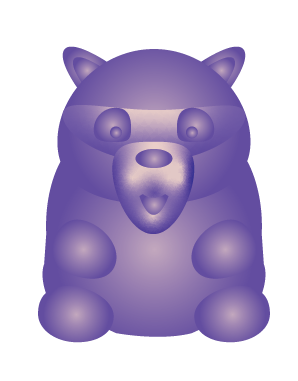
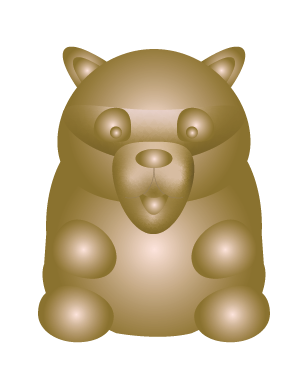
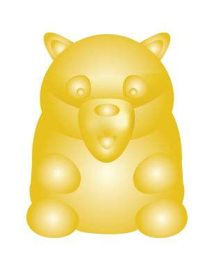
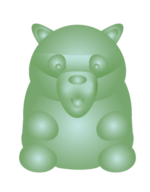
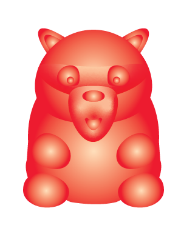

Hold your finger still on the spot
your result

Pearly Power
Bubble Tea flavoured fruit replacement
This is Pearly Power, a revolutionary Vitacoon designed to transform your daily fruit intake into a delightful bubble tea experience. Pearly Power combines the nutritional goodness of fruits with the irresistible flavors of bubble tea, ensuring you receive essential vitamins with a unique and refreshing twist.
your result
High stress levels
Low magnesium levels
Low on Vitamin A
Soft Sunlight
Immediately relax with the taste of oat & almond milk
sjadalkshd dhsuhhsd ahduad sa agdsgs gasdga
your result
Low activity levels
Medium stress levels
Low on Vitamin C

Sweet Dreams
Espresso Martini flavoured sleep replacement
Introducing Sweet Dreams, the Vitacoon that helps you out after a short night. We know that sometimes life can be so busy that you can only catch a few hours of sleep. That’s where Sweet Dreams comes in, with the delicious and invigorating taste of espresso martini. A small dose goes a long way to bring you an active day.
your result
High stress levels
Low activity levels

Mexican Fever
Mescal and Lime flavoured burnout buster
We understand the toll that a demanding lifestyle can take on your mental and physical well-being. That's why we created this Mexican Fever Vitacoon, packed with a powerful combination of vitamins, minerals, and natural extracts carefully selected to combat burnout symptoms and revitalize your energy levels.
your result
Medium stress levels
Low magnesium levels
High mental activity levels

New Moon
Yoga ready with kombucha taste
Meet our New Moon Vitacoon, a vitamin supplement specifically crafted to prepare you for your yoga routine, infused with the sparkling taste of kombucha. New Moon combines the goodness of essential nutrients with the refreshing and tangy flavors of kombucha, creating the perfect starter to elevate your yoga practice.
your result
High mental activity levels
Low mental activity levels
Natural Focus
Instant ADHD relief with the taste of natural orange wine
This is Natural Focus, a breakthrough Vitacoon designed to instantly help alleviate ADHD symptoms, in whatever situation you are. Natural Focus combines the power of targeted nutrients with the delightful essence of orange wine, offering a unique and enjoyable approach to managing your ADHD and promoting mental clarity.
your result
Medium activity levels
Hard time staying focussed when it gets late

Hot ’n Happy
Get ready to go out with the taste of Spicy BBQ Chicken
This is Hot ’n happy, the friendly Vitacoon that gets you ready for a night out, infusing you with energy and vitality and hyping you up with the savory flavor of BBQ chicken. A go-to for prepping your mind and body to make the most of your social experiences.